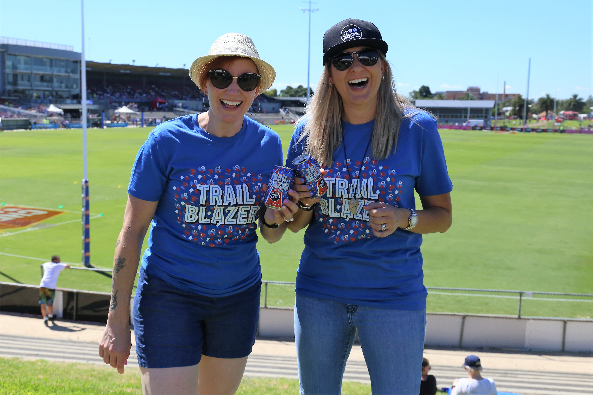

Bowerbirds - The Boweress
Nurtured by two birds
7 September, 2017
Give us some background to how Two Birds came to fruition?
DA: We both co-own Two Birds Brewing, which came about after we took a trip to the US together in 2010. After visiting too many breweries to name, it crystalised that we should be launching our own. Jayne was already an accomplished brewer from both Little Creatures and Mountain Goat, while I had a background in marketing.
A few months after that trip, we brewed our first beer, and we’ve grown into a team of 20 since, with our very own brewery in Spotswood!
How have your surroundings and travels shaped the launch of a craft beer brewery in Melbourne, Australia?
JL: Our travels and the things we experience really shape everything we do. Our Taco beer came to life on a plane between San Diego and Portland back in 2013, as we had just spent days and days eating nothing but tacos!
Similarly, we created a spiced rice ale in 2015 called Rice Rice Baby, paying homage to the Vietnamese community of Footscray. Our inspiration comes from everywhere, and our travel and experiences in Melbourne’s west continue to shape the decisions we make every day.
The beer industry is known for being a male dominated one, how has the industry supported you and can you share some setbacks if any, and victories?
DA: We’ve never really dwelled on the gender split of the industry, as when we started out we just knew we had the background and skills needed to pull it all off. But on the other hand, working as a woman in the beer industry is the only approach we know! We just do what comes naturally, and have never considered not being true to ourselves.
JL: In my experience, we may have been somewhat of a minority when we started out in 2011, but that has changed dramatically over the last six years. People from all walks of life find their way into the beer industry, and I hope that always remains the case.
Our recent collaboration with the Western Bulldogs AFLW side has been a massive victory for us though, as working closely with the women’s team from our local AFL club is such an incredible culmination of the last six years. I never could have imagined it, but this month we got to drink cans of our new Trail Blazer beer while watching the AFLW at Whitten Oval, and it was a moment I’ll never forget!
It must be exciting to be in such an innovative and ever-changing market. How is the beer market changing and what are some noticeable differences that stand out to you?
DA: I think there’s a massive change happening outside of the usual craft beer venues at the moment. More variety is being found everywhere, rather than just at specialty beer spots. Similarly, it’s spreading more and more beyond the main centres – we’re even hosting a beer dinner in Darwin this month!
We love the seasonal beers that you are producing, how did this come about and explain how the season can affect the final product?
JL: We love the idea of having beers that match the season, so the plan is that they should really hit the spot at that time. We have a roasty, warming Stout for Winter and a crisp, refreshing Pilsner for Summer.
What are your favourite beers at the moment?
DA: Trail Blazer, because it’s our first packaged lager and it’s perfect at this time of the year. Plus it’s the culmination of a pretty special partnership.
JL: My favourite beer is generally the one that we released most recently, because I have the greatest connection to it at the time. At the moment, it’s Stardust IPA which I brewed on our new pilot plant, as a tribute to David Bowie. It has a stack of hops named after celestial bodies (Southern Cross, Galaxy, Comet and Equinox) and is being served at The Nest with a little extra stardust sparkle – thanks to edible glitter! I like to think it’s what Bowie would have wanted!
Why is it important that this is a female led company?
DA: We never sought out being a female led company, it just is. It’s given us a different point of view from which to start. We’re proud of that story and happy to represent, plus we’ve always just loved beer.
We love ‘The Nest’ and the sense of community you create through having this. It seems to be the heart of the business. We are all about finding are own space figuratively and literally in the world as women, where would your ‘bowery’ or go to space/ place be for you personally?
DA and JL: The pub!
We love the aesthetic you have created within your brand. It seems you work with a lot of artists to achieve this; how do you go about commissioning pieces for limited releases and other product lines? Could you tell us about the inspiration behind these artworks?
DA: We work really closely with a design studio on rebranding our range about 18 months ago. We wanted it to properly reflect the character and story of Two Birds Brewing, and we’re really proud of what came out of that.
The label of beer in our ongoing range tells a story, from the plane on our Taco bottle referring to its origin on that flight to Portland, to the boat found on our Pale packaging, which references that it was the evolution of a beer previously known as Oaty McOatface!
One thing I love about the branding is that if you line up the six packs of our ongoing range, they all join together! You can follow the story of Two Birds from our first release Golden, right through to the Pale.
What’s on the cards for Two Birds in 2018?
JL: A big focus for us in 2018 is going outside of our usual channels and establishing new relationships, whether it be with new venues or through partnerships like with the Western Bulldogs.
Beer-wise, we’ve just installed a new pilot plant, which will allow us to experiment with smaller batches of beer and try new things. The whole brewing team is really excited to see what creations come out of it in the coming months!
To keep up to date with Two Birds click here
